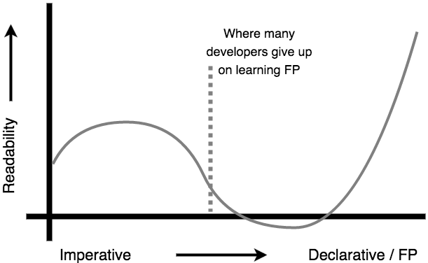
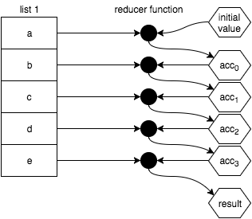
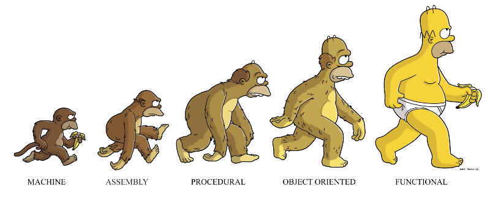

Introduction to FP
(w/ Javascript)
"A monad is just a monoid in the category of endofunctors..."
Why to FP?
Some facts:
(that may blow your mind)
- Elegant, readable and simple code makes it hard for bugs to hide
- 70% of time spent while maintaining code is spent reading it
- Global average for a coder's loc written p/ day is ~10

Why to FP?
Because it allows us to write a more...
- ...reusable code
- ...testable code
- ...declarative code
- ...readable code
In general, a more reliable & maintainable code in the long term
Readability Curve
Source: https://github.com/getify/Functional-Light-JS/blob/master/ch1.md
How to FP?
Some mandatory topics:
- First Class Functions
- High-Order Functions & Closures
- Function Purity
- Managing Function Input
- Function Composition
- Value Immutability
- Array Operations
- Recursion
- Monads
How to FP?
Some mandatory topics:
- First Class Functions
- High-Order Functions & Closures
- Function Purity
- Managing Function Input
- Function Composition
- Value Immutability
- Array Operations
- Recursion
- Monads
First Class Functions
(or functions as values)
The majority of patterns and tools around FP requires functions to be treated as first-class citizens
Which means they can:
Be assigned to variables
// anonymous functions
const aFunction = function () {
console.log('hello fp');
};
// or named functions
const aFunction = function aFunctionName() {
console.log('hello fp');
};
// or arrow functions
const aFunction = () => console.log('hello fp');
// or even borrowed methods
const aFunction = someObj.someOtherFunction;
Be assigned to data structures
// With objects
const obj = {
methodAnon: function() { },
methodNamed: function aFunctionName() { },
methodArrow: () => { },
methodBorrowed: otherObj.someOtherFunction;
};
// Or with arrays
const arr = [
function() { },
function aFunctionName() { },
() => { },
otherObj.someOtherFunction
];
Be used as other functions arguments
const hello = () => {
console.log('hello fp');
};
const callFn = fn => fn();
// ...
callFn(hello); // hello fp
Be returned from other functions
const getHello = () => {
return () => {
console.log('hello fp');
};
};
// or the shorter
const getHello = () => () => console.log('hello fp');
// ...
const hello = getHello();
hello(); // hello fp
// or in one go
getHello()(); // hello fp
How to FP?
Some mandatory topics:
- First Class Functions
- High-Order Functions & Closures
- Function Purity
- Managing Function Input
- Function Composition
- Value Immutability
- Array Operations
- Recursion
- Monads
High-Order Functions & Closures
(or working with stateful functions)
High-Order Functions
A high-order function is a function that does at least one of the following:
1. Takes one or more functions as arguments
const highOrderSecret = (fnArg) => {
const secret = 'FP rulez!';
fnArg(fnArg);
};
const logSecret = (secret) => console.log(secret);
const saveSecret = (secret) => secretStorage.add(secret);
// ...
highOrderSecret(logSecret); // FP rulez!
highOrderSecret(saveSecret);
Useful to separate concerns and abstract/decouple logic
2. Returns a function as it's result
const makeSecret = () => {
const secret = 'FP rulez!';
return () => secret; // Btw, this is a closure
};
const getSecret = makeSecret();
console.log(getSecret()); // FP rulez!
Useful to "hide" state (achieve privacy), persist state to be processed/used later and compose/add behaviour to other functions
Closures
A closure is a function that refers to "free variables" (variables defined in parent scopes)
In other words, it's a function that "remembers" the state/environment where it was created
A closer look into a closure
// global scope
const makeSecret = () => {
// scope 0
const secret = 'FP rulez';
// following will log undefined because parent a scope
// does not have access to child scopes
console.log(secretSuffix); // undefined
return () => {
// scope 1
const secretSuffix = '!!!!!';
return secret + secretSuffix;
};
};
console.log(secret); // undefined - we're in global scope here
const getSecret = makeSecret();
// It remembers it's own scope plus parent scopes
console.log(getSecret()); // FP rulez!!!!!
How to FP?
Some mandatory topics:
- First Class Functions
- High-Order Functions & Closures
- Function Purity
- Managing Function Input
- Function Composition
- Value Immutability
- Array Operations
- Recursion
- Monads
Function Purity
(or avoiding side effects)
A function is considered pure if it does not break the following "laws":
- Always has to return the same output given the same input
- Does not depend on/causes any side effect (state mutations, I/O operations)
Pure Functions
const add = (a, b) => a + b;
const getCircleArea = r => Math.PI * r * r;
const getFullName = (first, last) => `${first} ${last}`;
const logUserIn = user => Object.assign(
{},
user,
{ loggedIn: true }
);
Impure Functions
// I/O operation
const logMsg = msg => console.log(msg);
// Different outputs, same input
const getRandom = (max) => Math.random() * max;
// depends on mutable state
const getFullName = (first, last) =>
`${globalNamePrefix} ${first} ${last}`;
// Mutating object state
const logUserIn = user => user.loggedIn = true;
A program without any observable side effect is also a program that accomplishes nothing useful
but, side effects should be avoided where possible
as they make programs hard to follow/read, hard to test and hard to maintain
most of a program codebase should be composed of small, single-purpose and pure functions
How to FP?
Some mandatory topics:
- First Class Functions
- High-Order Functions & Closures
- Function Purity
- Managing Function Input
- Function Composition
- Value Immutability
- Array Operations
- Recursion
- Monads
Managing Function Input
(or manipulating function arguments)
Args vs Params
Question: what's the difference between arguments and parameters?
// firstName, middleName and lastName are parameters
const getFullName = (firstName, middleName, lastName) =>
`${firstName} ${middleName} ${lastName}`;
// All strings passed into getFullName() call are arguments
getFullName('Allan', 'Marques', 'Baptista');
// arguments < parameters - perfectly valid in JS
getFullName('Emperor', 'Palpatine');
// arguments > parameters - also valid
getFullName('Some', 'Big', 'Ass', 'Freaking', 'Name');
Args vs Params
Parameter is the variable which is part of the function signature
Argument is the value/variable/reference/expression being passed in during a function call
Arity
The number of parameters a function expects in it's signature is called arity
const double = n => n * 2; // arity = 1 (unary)
// arity = 3 (ternary)
const getFullName = (firstName, middleName, lastName) =>
`${firstName} ${middleName} ${lastName}`;
It's possible to get a function's arity through the Function.prototype.length property
const double = n => n * 2;
console.log(double.length); // 1
By combining the power of high-order functions (HoF), knowledge of function arity and loose arguments application, we can build powerful abstractions
Forcing Unary Functions
Sometimes we need to ensure a function that expects more the one parameter to receive only one argument
const strArr = ['1', '2', '3', '4', '5'];
const mumArr = strArr.map(parseInt);
console.log(numArr); // [1, NaN, NaN, NaN, NaN]
That happens because parseInt's signature is:parseInt(str, radix = 10)
And Array.prototype.map calls any function passed in with the arguments:fn(item, index, arr)
Forcing Unary Functions
We can fix that with a utility HoF usually called unary
That can be implemented in JS like so:
const unary = fn =>
param => fn(param);
And used like this:
const strArr = ['1', '2', '3', '4', '5'];
const mumArr = strArr.map(unary(parseInt));
console.log(numArr); // [1, 2, 3, 4, 5]
Partial Application
Calling a function and passing some arguments to it like:foo(bar, baz);
can also be described as applying function foo to the arguments bar and baz
Partial Application
Means fixing/binding a number of arguments to a function producing another function with smaller arity
It's useful when we know some of the arguments that'll be applied to a function ahead of time
But the rest of the arguments we'll only know at a later point in execution time.
Partial Application
A partial function application utility can easily be implemented like so:
const partial = (fn, ...eagerArgs) =>
(...lazyArgs) => fn(...eagerArgs, ...lazyArgs);
And it's used like this:
const fullName = (preferedTreatment, firstName, lastName) =>
`${preferedTreatment} ${lastName}, ${firstName}`;
const maleName = partial(fullName, 'Sir');
const femaleName = partial(fullName, 'Ma\'am');
maleName('Allan', 'Baptista'); // Sir Baptista, Allan
femaleName('Nadia', 'Carvalho'); // Ma'am Carvalho, Nadia
Partial Application
It's also possible to implement a utility that partially applies the final arguments like so:
const partialRight = (fn, ...rightArgs) =>
(...leftArgs) => fn(...leftArgs, ...rightArgs);
That can be used like this:
const fullName = (preferedTreatment, firstName, lastName) =>
`${preferedTreatment} ${lastName}, ${firstName}`;
const kirk = partial(fullName, 'James', 'Kirk');
kirk('Sir'); // Sir Kirk, James
kirk('Captain'); // Captain Kirk, James
Currying
It's a special kind of partial application that only applies the actual function once it's gathered all parameters it expects
const curriedFullName = preferedTreatment =>
firstName =>
lastName =>
`${preferedTreatment} ${lastName}, ${firstName}`;
const getName = curriedFullName('Mr'); // preferedTreatment = 'Mr'
const getLastName = getName('James'); // firstName = 'James'
getLastName('Bond'); // Mr. Bond, James
// or in one go
curriedFullName('Sir')('Leonard')('Nimoy'); // Sir Nimoy, Leonard
Currying
In Haskell all functions are curried by default, but in javascript we need to write a utility function to achieve the same
const autoCurry = (fn, arity = fn.length) =>
(...args) =>
args.length >= arity ?
fn(...args) :
autoCurry(partial(fn, ...args), arity - args.length);
Currying
const curriedFullName = autoCurry(
(preferedTreatment, firstName, lastName) =>
`${preferedTreatment} ${lastName}, ${firstName}`
);
const getName = curriedFullName('Mr'); // preferedTreatment = 'Mr'
const getLastName = getName('James'); // firstName = 'James'
getLastName('Bond'); // Mr. Bond, James
// or
curriedFullName('Sir')('Leonard')('Nimoy'); // Sir Nimoy, Leonard
// or
curriedFullName('Sir')('Rowan', 'Atkinson'); // Sir Atkinson, Rowan
// or
curriedFullName('Mr', 'Mickey', 'Mouse'); // Mr Mouse, Mickey
Currying
Note that the strict implementation of currying produces only unary functions after each call
So the implementation showed here should be called loose currying, which is often more useful
How to FP?
Some mandatory topics:
- First Class Functions
- High-Order Functions & Closures
- Function Purity
- Managing Function Input
- Function Composition
- Value Immutability
- Array Operations
- Recursion
- Monads
Function Composition
(or playing with building blocks)
When a program/application is well split into simple, single-purpose and pure functions a repeating pattern starts to come up:
const outputData = freeze(enhance(escape(inputData)));
And to avoid repetition, it's common to create composed abstractions:
const transformData = data => freeze(enhance(escape(data)));
// later somewhere...
const outputData = transformData(inputData);
// and even later...
const dataToPersist = transformData(inputData);
A better way
What if there was a way to achieve the same thing in a declarative way?
const transformData = compose(freeze, enhance, escape);
// later somewhere...
const outputData = transformData(inputData);
compose(...fns) takes a list of functions
and returns another function that applies each function from right to left, so:
// This
const transformData = compose(freeze, enhance, escape);
transformData(...args);
// is the same as this
const escaped = escape(...args);
const enhanced = enhance(escaped);
const outputData = freeze(enhanced);
// or this
const outputData = freeze(enhance(escape(...args)));
One can implement compose in JS like so:
const compose = (...fns) =>
(...args) => fns
.slice(0, -1)
.reduceRight(
(res, fn) => fn(res),
fns[fns.length - 1](...args)
);
Note that all functions besides the first one to be applied are expected to be unary
as it's not possible to return more the one value from a function
Piping
Sometimes reading the flow of data from right to left can be counter-intuitive
to fix that, we can build a variation of compose that applies each function from left to right
that variation is usually called pipe or pipeline
const transformData = pipe(escape, enhance, freeze);
// later somewhere...
const outputData = transformData(inputData);
Piping
pipe can be implemented like so:
const pipe = (firstFn, ...restFns) =>
(...args) => restFns.reduce(
(res, fn) => fn(res),
firstFn(...args)
);
Other than the difference on how data flows compose and pipe works in the same way
(Except this implementation o pipe is a little bit more performant than compose's implementation showed before)
How to FP?
Some mandatory topics:
- First Class Functions
- High-Order Functions & Closures
- Function Purity
- Managing Function Input
- Function Composition
- Value Immutability
- Array Operations
- Recursion
- Monads
Value Immutability
(or writing predictable logic)
In javascript (and the majority of hybrid/OO languages) immutability is usually not natively enforced on objects
Some may naively think assigning objects with the const keyword prevents objects from being mutated
const config = { cannotChange: 'Never changed' };
config.cannotChange = 'Chaos';
console.log(config); // { cannotChange: 'Chaos' }
// but the following throws a TypeError
config = { cannotChange: 'Invalid' };
But in fact, const only prevents the variable from being re-assigned
The case for immutability
- Mutating an object is a side effect
- Mutable objects are hard to follow/read
- Mutable objects are hard to predict
- Mutable objects often are the source of hard-to-find bugs
- Mutable objects are hard to debug
So, if immutability is not enforced natively by the language, how do we achieve it?
Immutability as a choice
Plain Objects
// Very bad
const logIn = user => {
user.loggedIn = true;
return user;
};
const loggedUser = logIn(anonymousUser);
console.log(loggedUser.loggedIn); // true
console.log(anonymousUser.loggedIn); // true
Immutability as a choice
Plain Objects
// Good
const logIn = user => {
const userCopy = Object.assign({}, user);
userCopy.loggedIn = true;
return userCopy;
};
const loggedUser = logIn(anonymousUser);
console.log(loggedUser.loggedIn); // true
console.log(anonymousUser.loggedIn); // false
Pattern: copy objects and mutate the copy
Immutability as a choice
Arrays
// Very bad
const addTask = (taskList, task) => {
taskList.push(add);
return taskList;
};
const newTaskList = addTask(taskList, task);
console.log(newTaskList.length); // 10
console.log(taskList.length); // 10
Immutability as a choice
Arrays
// Good
const addTask = (taskList, task) => {
// or [...taskList, task];
return taskList.concat(task);
};
const newTaskList = addTask(taskList, task);
console.log(newTaskList.length); // 10
console.log(taskList.length); // 9
Pattern: avoid mutable methods (push, pop, shift, unshift, splice, sort, fill, reverse)
instead use immutable methods (concat, slice, map, filter) or the spread notation
Immutability as a law
Object.freeze freezes an object, preventing it from being mutated (works w/ arrays as well)
const user = Object.freeze({ name: 'Elza' });
user.name = 'Evil'; // throws if in 'strict mode'
console.log(user.name); // Elza
Pattern: combine Object.freeze with other immutable patterns to achieve full immutability
Note that Object.freeze only freezes objects shallowly
const user = Object.freeze({
name: {
first: 'Elza',
last: 'Arendelle'
}
});
user.name.first = 'Evil';
// { first: 'Evil', last: 'Arendelle' }
console.log(user.name);
So to achieve full immutability all child objects also need to be frozen
Note that these patterns are much less performant than it's mutable counterpart
Even more if we're dealing with deep nested objects
If you need immutability as well as performance maybe it's time to bring a library in
Immutability Libs
- ImmutableJS (by facebook)
- mori (port of ClojureScript data structures)
But if performance is still an issue, you should think about replacing parts of your code with mutable patterns
but remember:
"Premature optimization is the root of all evil"
- Donald Knuth
How to FP?
Some mandatory topics:
- First Class Functions
- High-Order Functions & Closures
- Function Purity
- Managing Function Input
- Function Composition
- Value Immutability
- Array Operations
- Recursion
- Monads
Array Operations
(or more readable loops)
Array methods vs Loops
const activeItems = [];
for (let i = 0; i < arr.length; i++) {
if (arr[i].active === true) {
activeItems.push(arr[i]);
}
}
// vs
const activeItems = arr.filter(item => item.active === true);
Array methods vs Loops
Array methods are usually better because:
- Traversal logic is abstracted
- Terser, more readable and declarative code
- Functions and all it's goodness!
Loops are better when:
- Performance is needed (still, very questionable)
- Need to break out of loop early
map()
Array.prototype.map is a HoF that traverses the list applying the provided operator function to each item
and produces a new array with the values returned from each operator call
const bananas = ['🍌', '🍌', '🍌', '🍌', '🍌', '🍌'];
const mix = bananas.map((banana, index) => (
index % 2 === 0 ? '🍎' : banana
));
console.log(mix); // ['🍎', '🍌', '🍎', '🍌', '🍎', '🍌']
map()

Source: https://github.com/getify/Functional-Light-JS/blob/master/ch8.md
A word about the feared Functor
In FP terminology, a Functor is a wrapper object that has a utility method for applying an operator function to it's wrapped value
returning a new Functor wrapping the new value produced by the operator
If the wrapped value is compound the Functor applies the operator to each indidual value instead
All this is just a fancy way of saying that Functor is just an object that has a map method
filter()
Array.prototype.filter is a HoF that traverses the list applying the provided predicate function to each item
and produces a new array with the values of which the predicate function returned truthy
const badDiet = ['🍌', '🍫', '🍎', '🍫', '🥕', '🍫', '🍉', '🍫'];
const goodDiet = badDiet.filter(food => !food.includes('🍫'));
console.log(goodDiet); // ['🍌', '🍎', '🥕', '🍉']
filter()

Source: https://github.com/getify/Functional-Light-JS/blob/master/ch8.md
reduce()
Array.prototype.reduce is a HoF that traverses the list applying the provided reducer function to the previous returned value and current value
And produces whatever the last reducer call returns
const people = ['👩', '👧', '👨', '👦'];
const family = people.reduce((str, person) => (
str === '' ?
person :
str + '\u200D' + person
), '' /* <- initial value */);
console.log(family); // '👩👧👨👦'
reduce()

Source: https://github.com/getify/Functional-Light-JS/blob/master/ch8.md
How to FP?
Some mandatory topics:
- First Class Functions
- High-Order Functions & Closures
- Function Purity
- Managing Function Input
- Function Composition
- Value Immutability
- Array Operations
- Recursion
- Monads
Recursion
(or recursion (or recursion...))
Recursion is when a function calls itself until a base condition is satisfied
const fib = n =>
n <= 1 ?
n :
fib(n - 2) + fib(n - 1);
fib(10); // 55
Declarative iterations
Although it may be less performant, expressing repetition with recursion is usually more readable because of it's declarative nature
const sum = (...values) => {
let total = 0;
for(let i = 0; i < values.length; i++) {
total += values[i];
}
return total;
};
// vs
const sum = (firstValue, ...otherValues) =>
otherValues.length === 0 ?
firstValue :
firstValue + sum(...otherValues);
"Loops may achieve a performance gain for your program. Recursion may achieve a performance gain for your programmer. Choose which is more important in your situation!"
- Leigh Caldwell
Divide and Conquer
An common strategy to apply when creating a recursive functions is taking the divide and conquer approach:
- Treat every list as a pair containing the first value and a list with the rest of the values
- Define the base condition
- Define logic around the first value
- Apply the function itself to the rest of the values
Divide and Conquer
Iterative:
const map = (arr, fn) => {
const newArr = [];
for (let i = 0; i < arr.length; i++) {
newArr.push(fn(arr[i]));
}
return newArr;
};
Recursive:
const map = ([firstVal, ...rest], fn) =>
firstVal === undefined ?
[] :
[fn(firstVal), ...map(rest, fn)];
Stack Overflow
The function stack is a limited resource
If the base condition of a recursive function is not met until the environment runs out of stack frames
The program/application will crash and burn
// If list has something like 200 items or more,
// Stack Overflow!
const values = recursiveMap(bigList, item => item.value);
Always ensure the base condition will be satisfied before that or refactor the function to use the benefits of tail call optimization
Tail call optimization
Tail call is when a function call is the very last thing evaluated inside a function
const foo = () => {
const value = 'tail call';
return bar(value); // <- bar is being tail called
};
When this happens the compiler can optimize the runtime by reusing the last stack frame
Tail call optimization
By refactoring the recursive map utility from:
const map = ([firstVal, ...rest], fn) =>
firstVal === undefined ?
[] :
[fn(firstVal), ...map(rest, fn)];
To use TCO:
const map = ([firstVal, ...rest], fn, result = []) =>
firstVal === undefined ?
result :
map(rest, fn, [...result, fn(firstVal)]);
map() will now support mapping over lists of any size
How to FP?
Some mandatory topics:
- First Class Functions
- High-Order Functions & Closures
- Function Purity
- Managing Function Input
- Function Composition
- Value Immutability
- Array Operations
- Recursion
- Monads
Monads
(or the thing that, once understood, you won't be able to explain)
But first, some boring topics that won't be covered:
(but you should at some point)
- Abstract Algebra
- Type Theory
- Category Theory
Some people say these fundamental topics are mandatory to start FPing
I disaggree. But when you feel ready to dive into the theory behind FP, it's' recommended you do so
Revisiting Functors
Meet something and nothing:
const something = (value) => ({
map: fn => something(fn(value))
});
const nothing = () => ({
map: nothing
});
Note: the names of this Functor implementations vary a lot
(Some/None, Just/Nothing, Something/Empty...)
That happens because Functors, like any other FP type, is like a loose interface
Implementations must respect the type laws but their names are not enforced
Revisiting Functors
something is useful
const getUser = userId => {
const user = repository.findUserById(userId);
return user ? something(user) : nothing();
}
// now we can write
// beautiful, idiomatic, declarative code
getUser(existingId) // User exists
.map(attachPermissions(permissions))
.map(attachOrders(orders))
.map(showProfile(template));
Revisiting Functors
nothing is useful
const getUser = userId => {
const user = repository.findUserById(userId);
return user ? something(user) : nothing();
}
// now we can write
// beautiful, idiomatic, declarative code
getUser(nonExistantId) // User is not found
.map(attachPermissions(permissions))
.map(attachOrders(orders))
.map(showProfile(profileTemplate));
It's the same exact code, but nothing happens. Not even an exception!
This allows easier and safer handling of errors without sacrificing readability
Revisiting Functors
handling branches/errors
const something = (value) => ({
map: fn => something(fn(value)),
orError: nothing
});
const nothing = () => ({
map: nothing,
orError: something
});
Revisiting Functors
handling branches/errors
const getUser = userId => {
const user = repository.findUserById(userId);
return user ? something(user) : nothing();
}
// now we can write
// beautiful, idiomatic, declarative code
getUser(nonExistantId) // User is not found
.map(attachPermissions(permissions))
.map(attachOrders(orders))
.map(showProfile(profileTemplate))
// error branch executed when is nothing
.orError(new Error('User not found'))
.map(showError(errorTemplate));
Revisiting Functors
Containing containers
const attachPermissions = permissions => user =>
permissions ?
something(user.setPermissions(permissions)) :
nothing();
const attachOrders = orders => user =>
orders ?
something(user.setOrders(orders)) :
nothing();
getUser(userId)
.map(attachPermissions(permissions))// something(something(user))
.map(attachOrders(orders))// Error: setOrders is not a function
.map(showProfile(profileTemplate))
.orError(new Error('User not found'))
.map(showError(errorTemplate));
Monads to the rescue
Much like the Functor, the Monad has a utility method for applying an operator function to it's wrapped value
but unlike the Functors map() utility, it does not return a new Monad.
This utility function has many names: bind(), chain() and flatMap()
Monads to the rescue
Unboxing a box
const something = (value) => ({
map: fn => something(fn(value)),
flatMap: fn => fn(value),
orError: nothing
});
const nothing = () => ({
map: nothing,
flatMap: nothing,
orError: something
});
Monads to the rescue
Unboxing a box
const attachPermissions = permissions => user =>
permissions ?
something(user.setPermissions(permissions)) :
nothing();
const attachOrders = orders => user =>
orders ?
something(user.setOrders(orders)) :
nothing();
getUser(userId)
.flatMap(attachPermissions(permissions)) // something(user)
.flatMap(attachOrders(orders)) // // something(user)
.map(showProfile(profileTemplate))
.orError(new Error('User not found'))
.map(showError(errorTemplate));
You are using monads already
Let's create a fictional monad that wraps a future value
const future = futureValue => ({
map: fn => future(fn(futureValue)),
flatMap: fn => fn(futureValue)
});
That can be used like this:
future(asyncGetUser(userId))
.flatMap(asyncAttatchPermissions(userId))
.flatMap(asyncAttatchOrders(userId))
.map(showProfile(profileTemplate));
You are using monads already
But map() and flatMap() are not very meaningful when dealing with future values
What if we merged and renamed them?
const future = futureValue => ({
then: fn => typeof futureValue.then === 'function' ?
futureValue.then(fn) :
future(fn(futureValue))
});
Now it reads a lot better:
future(asyncGetUser(userId))
.then(asyncAttatchPermissions(userId))
.then(asyncAttatchOrders(userId))
.then(showProfile(profileTemplate));
You are using monads already
Feeling a déjà vu?
Promise.resolve(asyncGetUser(userId))
.then(asyncAttatchPermissions(userId))
.then(asyncAttatchOrders(userId))
.then(showProfile(profileTemplate));
Yes! Promise is a Monad!
Feel betrayed?
Imperative vs Declarative
What this code is doing?
const words = [
'The', 'quick', 'brown', 'fox,', 'jumps', 'over',
'the', 'lazy', 'dog.', '- It', 'was', 'a', 'german',
'shepherd!'
];
let result = false;
for (let i = 0; i < words.length; i++) {
words[i] = words[i].replace(/[ -_:;.,!\?]/g, '');
if (words[i].length >= 3 && words[i].length <= 6) {
words[i] = words[i].toUpperCase()
.split('').reverse().join('');
if (words[i] === 'GOD') {
result = true;
break;
}
}
}
if (result) console.log('Found GOD...');
if (words[0] !== 'The') console.log('...and the devil');
And this one?
const words = [
'The', 'quick', 'brown', 'fox,', 'jumps', 'over',
'the', 'lazy', 'dog.', '- It', 'was', 'a', 'german',
'shepherd!'
];
const removeInvalidChars = word => word.replace(/[ -_:;.,!\?]/g, '');
const enoughChars = word => word.length >= 3;
const canContainGod = word => word.length >= 3 && word.length <= 6;
const toUpperCase = word => word.toUpperCase();
const reverseStr = word => word.split('').reverse().join('');
const toBibleCode = compose(reverseStr, toUpperCase);
const isGod = word => word === 'GOD';
const logIf = (condition, str) = condition && console.log(str);
const result = words
.map(removeInvalidChars)
.filter(canContainGod)
.map(toBibleCode)
.some(isGod);
logIf(result === true, 'Found GOD...');
logIf(words[0] !== 'The', '...and the devil');
Answer:
(Almost) the same thing
Challenge: Can you spot a difference between both outputs?
Developer Evolution
What to FP?
JS FP libs
- lodash/fp - Functional utilities on top of lodash
- Ramda - Functional utilities
- functional.js - Functional utilities
- Folktale - Suite of functional libraries
Resources
- Functional Light JS (by getify) - Great FP book, greatly inspired this talk
- Mostly adequate guide to FP - Awesome FP book, dives into theory more
- JavaScript Allongé - A must read for every JS developer
- Awesome FP JS - List of resources about FP in JS
Contacts
- Linkedin: /in/allanbaptista
- Github: m4n3z40
- Skype: abaptista.daitan
- E-mail: abaptista@daitangroup.com
Thanks
I'm out